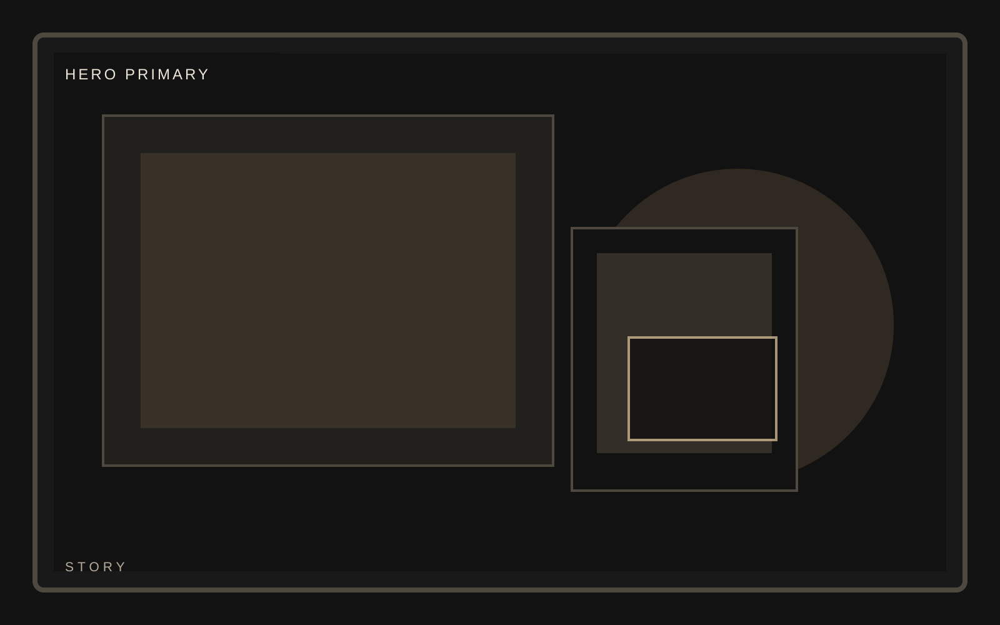
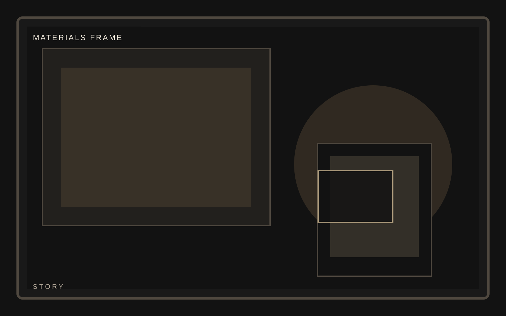
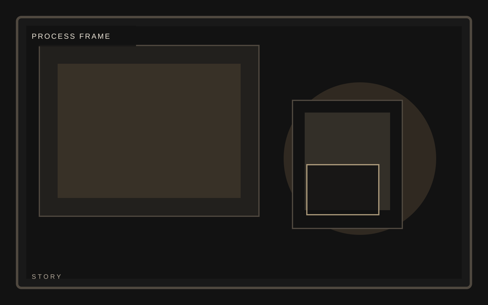
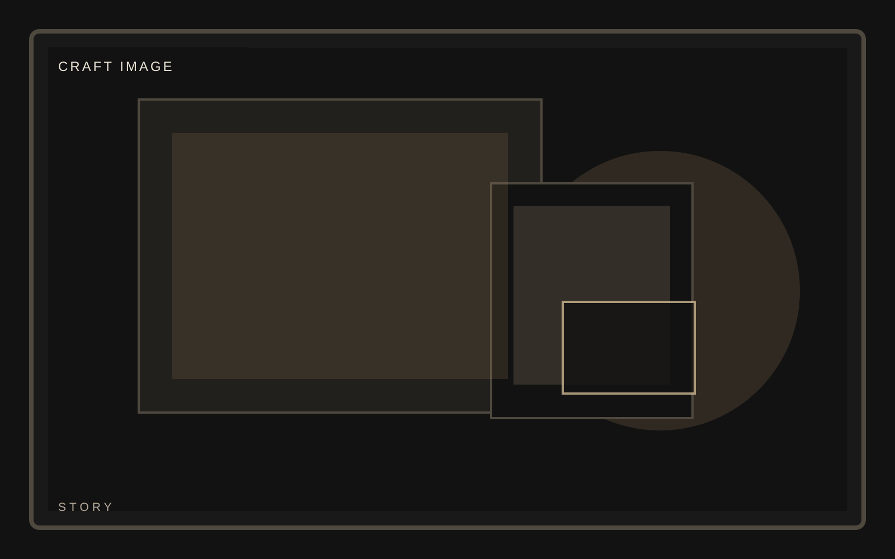

Edition
Low-volume release

Collector product launch
A premium physical product template built for limited releases, collector narratives, and high-intent inquiry rather than generic commerce tropes. Narrative pressure belongs on materials, process, and release logic.
Collector product launch
Origin should avoid the standard founder narrative. Focus on the logic of the object and the standards that shaped it.



Collector product launch
Materials need to feel tactile and specific. The still frame should suggest texture, weight, and finish quality.
Collector product launch
Meridian treats process like an editorial spread, using restraint, contrast, and collector-grade framing to keep pressure on the object. This story page stays consistent with the template system while giving this section its own visual weight.
Collector product launch
The closing section should leave controlled tension in the page rather than wrapping everything up too neatly.